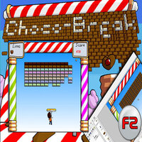
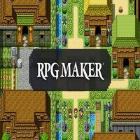
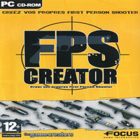

J'ai ensuite voulu me diriger vers un domaine plus complexe et plus intéressant en cherchant à apprendre à développer un jeu vidéo facilement. Mon tout premier mini-jeu a été programmé avec
The Games Factory 2, étant un logiciel assez simple. J'ai donc cherché un tutoriel sur ce logiciel et j'ai appris à créer un jeu semblable à Pong qui consistait à casser des briques de chocolat en faisaint rebondir une balle sur un parapluie. J'ai donc décidé de recréer le projet grâce au même tutoriel. Après avoir fait l'expérience de quelques logiciels tels que RPG Maker ou bien même FPS Creator, j'ai ensuite travaillé globalement avec Unity 3D et Unreal Engine 4, étant des logiciels très réputés pour la création de jeux vidéos FPS (First Person Shooter) et TPS (Third Person Shooter). Souhaitant apprendre à utiliser ces logiciels, j'ai découvert des formations pour débutants sur Udemy et YouTube pour la création de jeux sur les moteurs de création de jeux Unity 3D et
Unreal Engine 4. Dans les exemples suivants, j'ai suivi les tutoriels "Unreal Engine 4 [Horror Game] - FR" de MrFeuilleVerte sur Unreal Engine 4 et
"Créer un jeu en 2D facilement avec Unity" de TUTO UNITY FR sur Unity.



ATTENTION ! DES SCREAMERS SE CACHENT DERRIERE LES PORTES DE LA MAISON